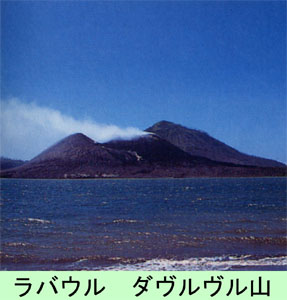

|
|
第４７ 軍靴無情
戦場に来てから、間もなく３年目を迎えようとしていた。この頃は、日本軍はドンドン敗退して行き、戦況は悪化するばかりでし
た。熱帯雨林の中で、高温多湿のジャングルの中を、しかも３００キロメートル以上の距離を行軍すれば、履いている軍靴はボロボ
ロになり駄目になってしまいます。
２年間も戦場で、絶え間なく戦闘しているのに、ろくろく食料の補給もない。ましてや軍靴の配給などあろう筈もなかった。ここ
の戦場では、自分の軍靴は自分で何とか工面しなければならなかった。ジャングル戦では、軍靴は我々にとっては食べ物同様に大事
なものでした。熱帯のジャングルには棘があったり毒蛇、毒虫がいたりしますから、我々は裸足では歩けませんでした。原住民はジ
ャングルの中を裸足で、平気で歩くので驚いていました。彼等の足の裏はまるで、象の足のようで、割れ目さえあり分厚い皮をして
いました。それでも、痛いこともあるという話を原住民から聞いたことがあります。
セピック河流域にある軍事拠点ウリンガンの『ウリンガン軍通信所長』をしていた時、私の当番兵は前田上等兵で、私の身の回り
を世話してくれました。彼は下関市出身で旅館の息子さんでした。昭和１６年徴集兵、よく太った立派な体格をした元気のよい兵でした。
ウリンガンという所は蚊が物凄く多いところで、我が軍通信隊員は全員マラリヤにかかっていました。マラリヤには色々の種類が
あるそうで、３日に１回とか４日に１回熱が出るものもあり、また、突然高熱が出るものもありました。ここのマラリヤは質が悪い
という話でした。マラリヤは初めは寒気がして来て、間もなく高熱が出て来る。ある時間が経つと元の体に戻り、これの繰り返しで
すから、体力も段々減衰していきます。
前田上等兵もマラリヤに侵されていて、熱が出そうになると
『今から熱が出るので、大声をだして唸りますから、中尉殿、心配しないで下さい』と、わざわざ私に断っておいて、蚊帳の中
で大声を出し、よく唸ったものでした。私も彼の真似をしてみたら、なるほど、大声を出すと、苦痛がいくらかやわらぐようでした。
なにかにつけて面白い兵でした。
その前田上等兵がある日のこと、自分がいま持っている軍靴について、私に述懐したことがありました。その話をこれからします。
前田上等兵が『ウリンガン軍通信所』まで追及して来る道中の出来事の話です。ウリンガン軍通信所に追及して行く途中で、立派
な軍靴を履いた兵隊が行き倒れて死んでいるのを見つけた彼は、これは良い物を見つけたと喜んで、死んだ兵隊の軍靴を引っ張って
脱ぎ取ろうとしたら、その兵隊が弱々しい声で
『おーい、俺はまだ生きてるぞ。靴がないと歩いて行けぬから、俺の靴を盗むな』と言ったそうです。
彼は、てっきり死んでいる者と思ったんだそうです。ここまでは、よいのですが、彼の言う事が変わっていた。

『お前はもうじき死ぬんだろう。どうせ歩いては行けないのだから俺にくれ』と言って、この軍靴をもらったんですと言った。この
話を聞いて
『そうか、うまくやったなあ』と、笑い飛ばすより外なかった。その時は、『生と死』とか『戦争とは何か』そんな言葉は、平和な時
に言う言葉だとつくづく感じました。生きてなお、敵と戦わねばならない。利用出来るものは何でも利用して生きていき、敵と戦うこ
とが大事な使命でした。
豪快な前田上等兵はその軍靴を履き、ホーランジァに転進途中、ベリンガで戦死し陸軍伍長に昇進していた事を戦後、須貝准尉さん
に聞いた。非情な戦争でした。
|